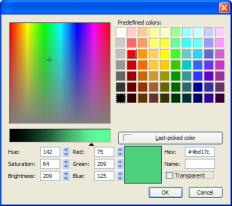

Color Picker
Composer has a helper for simple
and convenient usage of its new color picker inside a
sidebar or extension. This helper allows to create
persistent color objects that carry information for a given
system color, for example the foreground color, the page's
background color, table cells' background color and so
on.
The object is
ColorPickerHelper
newPersistentColorObject: function(aColorObjectId)
cleanPersistentColorObject: function(aColorObjectId)
getCurrentColor: function(aColorObjectId)
setLastPickedColor: function(aColorObjectId, aColor)
isCancelled: function(aColorObjectId)
openColorPicker: function(aColorObjectId, aWindowTitle, aShowTransparency)
- Create a new persistent color
object
- Delete a persistent color
object
- Retrieve the selected color in
a color object
- Set the last picked color for a
given color object
- Show the color picker
- Check if the color picker was
cancelled
- Example
Create a new persistent color
object
| Method name |
newPersistentColorObject |
| Parameters |
aColorObjectId, a unique
string identifying the color object
|
| Return value |
null in case of error or failure,
the color object otherwise |
List of predefined color object identifiers:
- "
TextColor" : color of the text
- "
PageBackgroundColor" : background color
of the document
- "
TableBackgroundColor" : background of a
table
- "
TableCellBackgroundColor" : background
of a table cell
- "
BorderColor" : color of a border or
outline applied to an element
Delete a persistent color object
| Method name |
cleanPersistentColorObject |
| Parameters |
aColorObjectId, a unique
string identifying the color object
|
| Return value |
no return
value |
Retrieve the selected color in a
color object
| Method name |
getCurrentColor |
| Parameters |
aColorObjectId, a unique
string identifying the color object
|
| Return value |
null in case of error or failure
(for instance if the corresponding color object does
not exist), the selected color in the corresponding
color object otherwise |
Set the last picked color for a given
color object
| Method name |
setLastPickedColor |
| Parameters |
aColorObjectId, a unique
string identifying the color objectaColor, a color (see the
CSS definition of a color)
|
| Return value |
null in case of error or failure,
the color aColor otherwise |
Show the color picker
| Method name |
openColorPicker |
| Parameters |
aColorObjectId, a unique
string identifying the color object ; if the
color object for this identifier does not
already exist, a new color object is created
for that identifier-
aWindowTitle,
a title for the color picker dialog
aShowTransparency, a boolean
being true if the checkbox allowing to set the
color "transparent" has to be shown (for CSS
backgrounds for instance)
|
| Return value |
null in case of error or failure,
the color object otherwise |
It is possible to check if the color picker was closed by
the user on a Cancel action using the following method:
Check if the color picker was
cancelled
| Method name |
isCancelled |
| Parameters |
aColorObjectId, a unique
string identifying the color object
|
| Return value |
returns a
boolean is the last color picked shown for the color
object identifier was cancelled ; if there is no
color object for this identifier, an exception
NS_ERROR_NULL_POINTER is thrown |
Example
const kTEMPLATE_COLUMN_BG_COLOR = "TemplateColumnBgColor";
var colorHelper = window.top.ColorPickerHelper;
if (colorHelper.newPersistentColorObject(kTEMPLATE_COLUMN_BG_COLOR))
{
colorHelper.openColorPicker( kTEMPLATE_COLUMN_BG_COLOR,
"Set the background color for the column",
true);
if (colorHelper.isCancelled(kTEMPLATE_COLUMN_BG_COLOR))
return;
SetTemplateBgColor(colorHelper.getCurrentColor(kTEMPLATE_COLUMN_BG_COLOR));
}
History
- Last Update:
- 2007-oct-26, 12:53pm CEST
- 2007-oct-26, 12:53pm CEST
- initial revision (dglazman)